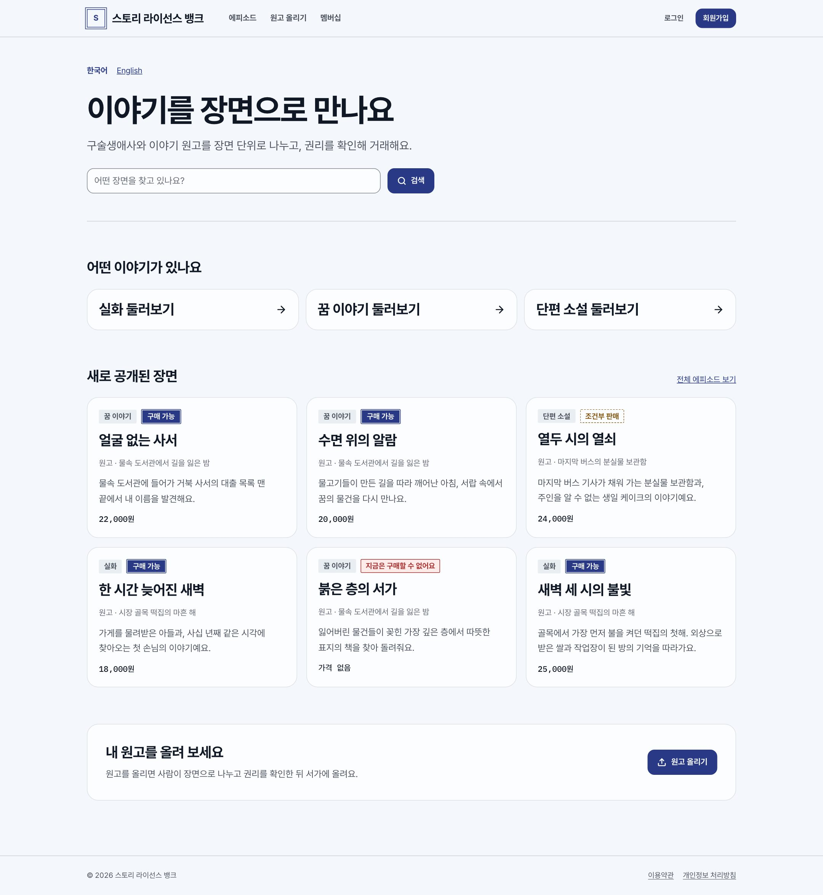
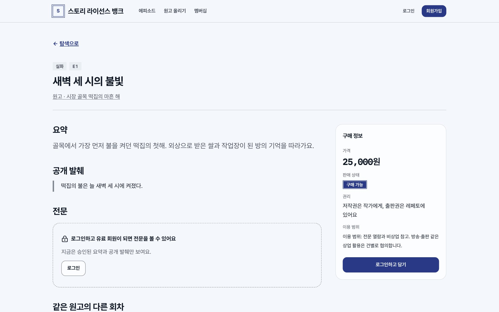
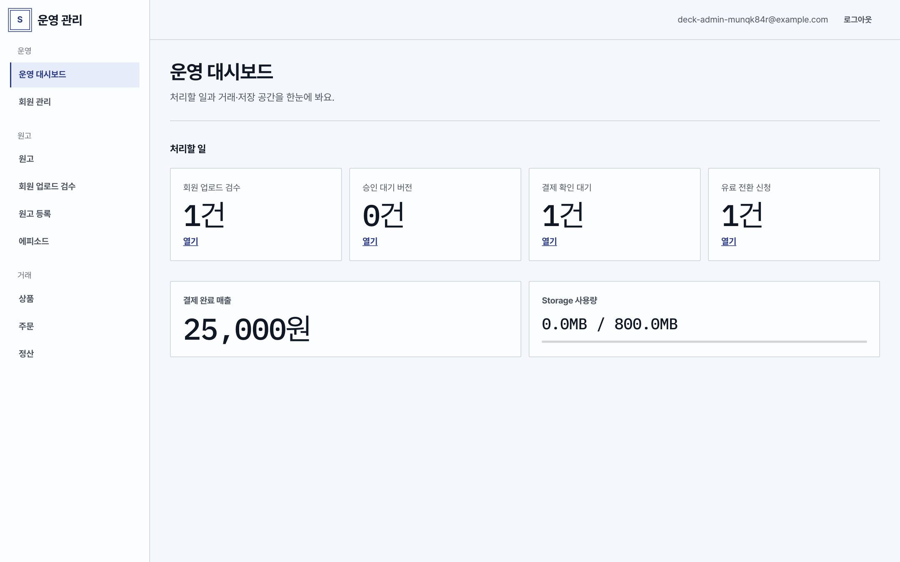
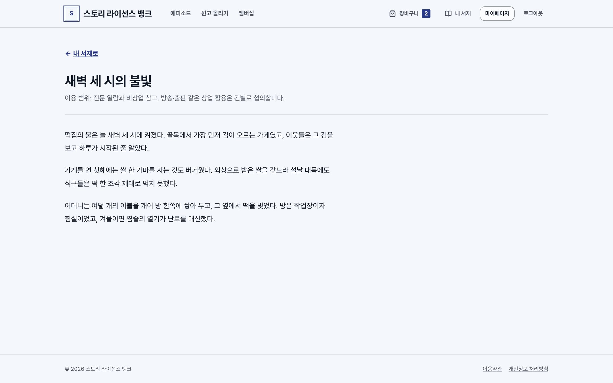
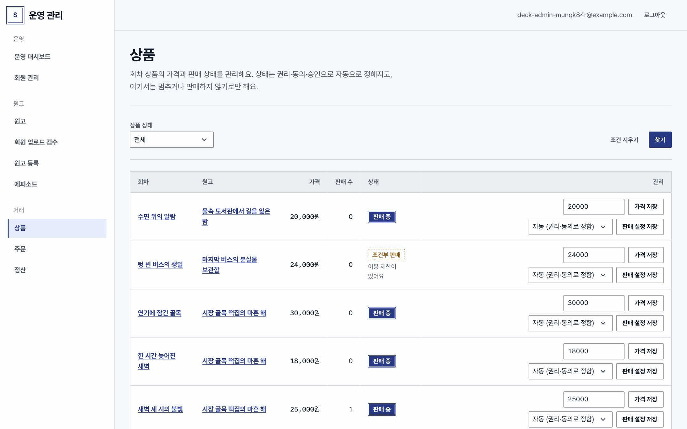

Storybank · Planning & Design
스토리뱅크
기획·디자인 자료
스토리뱅크는 인터뷰 원고를 에피소드 단위로 나누고, 권리와 동의를 확인한 뒤, 필요한 회차만 골라 구매하는 스토리 라이선스 서비스입니다. 무엇을 왜 만드는지는 기획안에, 화면과 디자인 기준은 디자인 시안에 정리했습니다.
시안은 로컬 시연 환경에서 동작하는 알파 서비스를 캡처했습니다. 화면의 원고와 인물은 모두 합성 데이터입니다.P-01 · P-04 · A-02 · P-13 · A-21





Deliverables
계약 납품물과 자료
용역계약 납품물 C1–C5